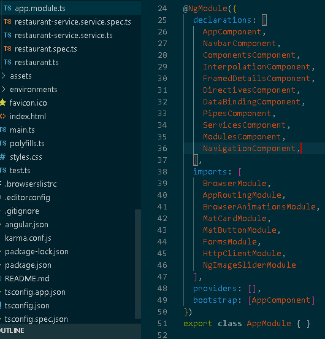

<mat-card class="content" >
    <span>
        <div class="horizontal">
            <p>
                A <b>module</b> is a collection of components, directives, pipes and services. A module is typically a reusable collection of parts that achieve some functionality. Every angular application has a root module called AppModule.
                The AppModule is like a hub for all the different parts of the application (components, services, other modules etc.). A variety of external modules, referred to as angular libraries, are included in this application, indicated by the @angular prefix.
                For example, most applications will include the FormsModule, the HttpClientModule and the RouterModule. Third party modules can also be installed using npm and imported for use. 
                <b>Angular Material</b>, a library of commonly used ui components is included in this application. <a class="link" href="https://material.angular.io/">Check it out here</a>. <b>CDK (Component Dev Kit)</b> is also included to facilitate the image overlay. <a class="link" href="https://material.angular.io/cdk/categories">Check it out here</a>.
            </p>   
            
        </div>
    </span>
</mat-card>